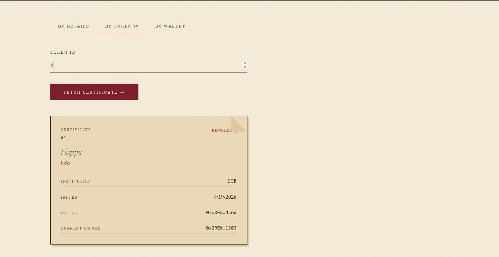

Valid.
Original four fields submitted. Hash matches the digest stored at mint. Token #142
owned by 0xAbC…7890. Certificate authentic, not revoked, not replaced.
The Live Demo, Frozen
Submit four fields. Receive one of four answers. Watch what happens when you change a single
letter — John becomes Jhon and the verdict flips.
There is no middle ground.
Original four fields submitted. Hash matches the digest stored at mint. Token #142
owned by 0xAbC…7890. Certificate authentic, not revoked, not replaced.
Same fields, except John → Jhon. The
keccak256 diverges entirely; no record exists in the
hashToTokenId map. Verdict in milliseconds.

The By Token N° tab returns cert N° 4 —
Happu · CSE · DCE — stamped REVOKED.
The token is still on-chain; the certificate is no longer valid.
Original token burned. New token issued via reissue. A verifier presenting the stale hash
receives a useful answer — revoked = true, replacedByTokenId = 2 —
rather than a dead end. The chain remembers the correction.
test:241–260
locks this property down: change a byte, lose the certificate.